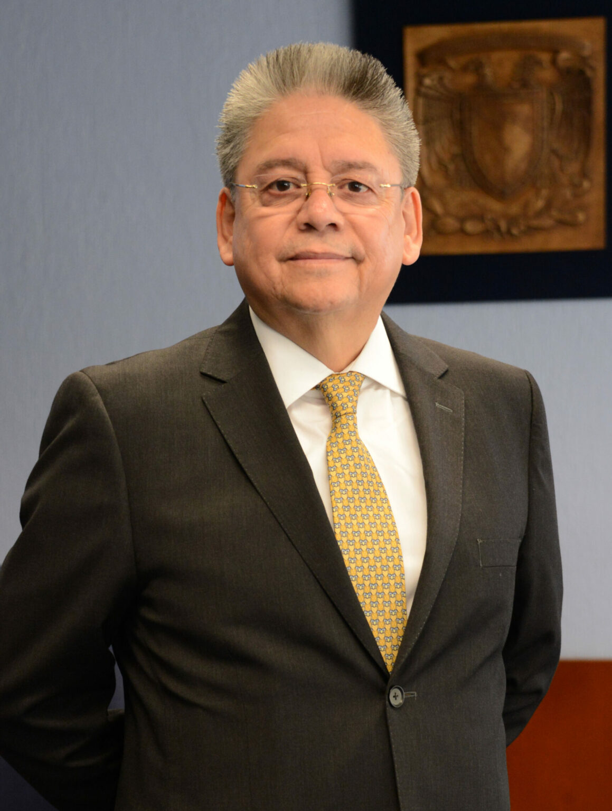
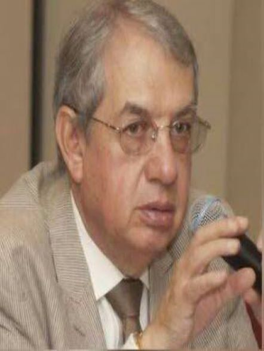
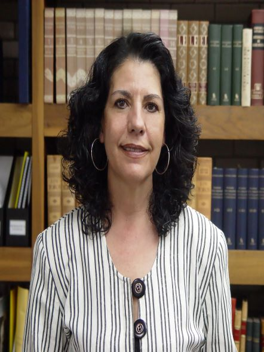
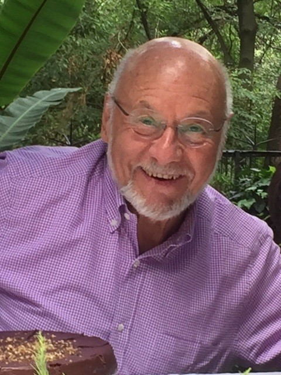
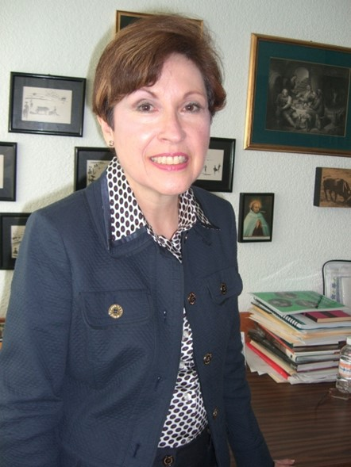

Acerca del Consejo Académico de Humanidades y Artes
El CAAHyA es un órgano colegiado que articula la planeación, evaluación y coordinación académica del área de las humanidades y las artes, en diálogo permanente con las entidades que lo integran.

Origen y propósito
Como resultado de un acuerdo del Congreso Universitario en 1990, el Consejo Universitario aprobó en 1992 la creación de los Consejos Académicos de Área y del Consejo Académico del Bachillerato, con el propósito de que estos órganos colegiados funcionen como intermediarios entre los Consejos Técnicos y el Consejo Universitario. Sus funciones ordinarias iniciaron en 1994.
Funciones principales
- Planeación y evaluación académicas en programas como PAPIIT y PASPA.
- Revisión y aprobación de los proyectos de creación, adecuación y modificación de planes de estudio.
- Evaluación de profesores e investigadores en programas como PRIDE.
- Ratificación de las comisiones dictaminadoras y evaluadoras.
- Diseño de políticas académicas que contribuyan al mejoramiento de la enseñanza, a una mayor vinculación entre la investigación y la docencia, así como al mejor aprovechamiento de los recursos humanos y materiales con que cuenta la Universidad.
Los Consejos Académicos, por su composición y por sus funciones, son instancias de coordinación y articulación de los distintos subsistemas universitarios y de diversas entidades académicas. Por ello, pueden fungir como plataforma para realizar y promover proyectos multi e interdisciplinarios y consolidar políticas académicas que redunden en una mejor integración de los distintos sectores que conforman la comunidad universitaria.
¿Quiénes integran el CAAHyA?
El Consejo Académico del Área de las Humanidades y de las Artes está integrado por las siguientes entidades académicas:
- Facultad de Arquitectura.
- Facultad de Artes y Diseño.
- Facultad de Filosofía y Letras.
- Facultad de Música.
- Facultad de Estudios Superiores Acatlán.
- Facultad de Estudios Superiores Aragón.
- Facultad de Estudios Superiores Cuautitlán.
- Escuela Nacional de Estudios Superiores, Unidad León.
- Escuela Nacional de Estudios Superiores, Unidad Morelia.
- Escuela Nacional de Estudios Superiores, Unidad Mérida.
- Escuela Nacional de Estudios Superiores, Unidad Juriquilla.
- Escuela Nacional de Lenguas, Lingüística y Traducción.
- Escuela Nacional de Artes Cinematográficas.
- Escuela Nacional de Ciencias Forenses.
- Instituto de Investigaciones Bibliográficas.
- Instituto de Investigaciones Bibliotecológicas y de la Información.
- Instituto de Investigaciones Estéticas.
- Instituto de Investigaciones Filológicas.
- Instituto de Investigaciones Filosóficas.
- Instituto de Investigaciones Históricas.
- Instituto de Investigaciones sobre la Universidad y la Educación.
- Centro de Investigaciones sobre América Latina y el Caribe.
- Centro de Investigaciones y Estudios de Género.
- Centro Peninsular en Humanidades y Ciencias Sociales.
Otros coordinadores
Han sido coordinadores de este Consejo Académico:

Dr. Gerardo García Luna Martínez

Dr. Adalberto Enrique Santana Hernández

Dra. Guadalupe Curiel Defossé †

Dr. Luis Arnal Simón †

Dra. María Teresa Uriarte Castañeda
